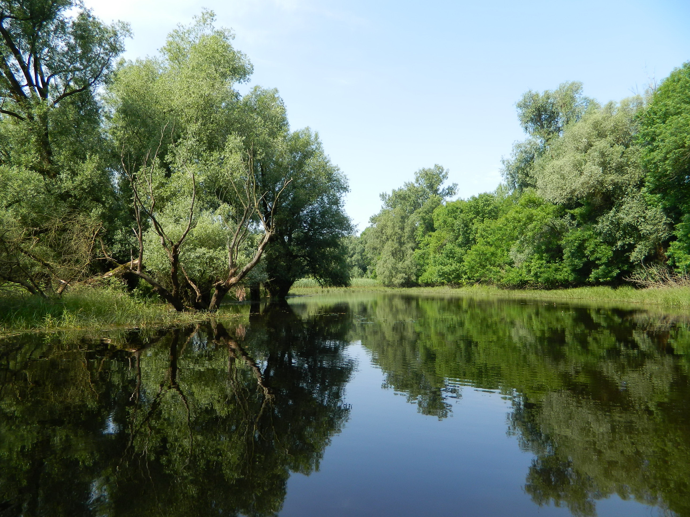

Gemencről
Magyarország legnagyobb ártéri erdeje, egyben vizes élőhelye is,
különleges növény és állatvilággal. Egy „ezerarcú” csoda, amely
minden évszakban és vízállásnál más arcát mutatja, magas vízállás
esetén számtalan lehetőséget nyújt a mellékágak és az ártéri erdő
bejárására, de alacsony vízállásnál is olyan lehetőségeket tartogat,
amelyeket kihasználva élménygazdag tartalommal lehet megtölteni
a túrákat.

Magunkról
Aki hozzánk jön, az közvetlenül velem, azaz a túravezetővel fogja egyeztetni a programot.
Néhány mondat magamról: Több mint két évtizeddel ezelőtt
Szegeden szereztem történelem szakos bölcsész és tanár diplomát,
több mint 10 éve pedagógusként dolgozom Baján. A Duna és a hazai
vizek mindig is az életem részét képezték, hiszen Dunaszekcsőn
nőttem fel, ahol először nagyapámmal horgásztam és jártam a
Dunát, majd felnőttként már Szegeden és Baján hódoltam a
horgászatnak. Az elmúlt években már túravezetőként is jártam a
Baja környéki vizeket, több mint 150 túrát vezettem már a Vén-
Dunán, Rezéti-Dunán, Ferenc tápcsatornán, Szeremlei-Sugovicán az
extrém alacsonytól a nagyon magas (árvíz szint) vízállásig.